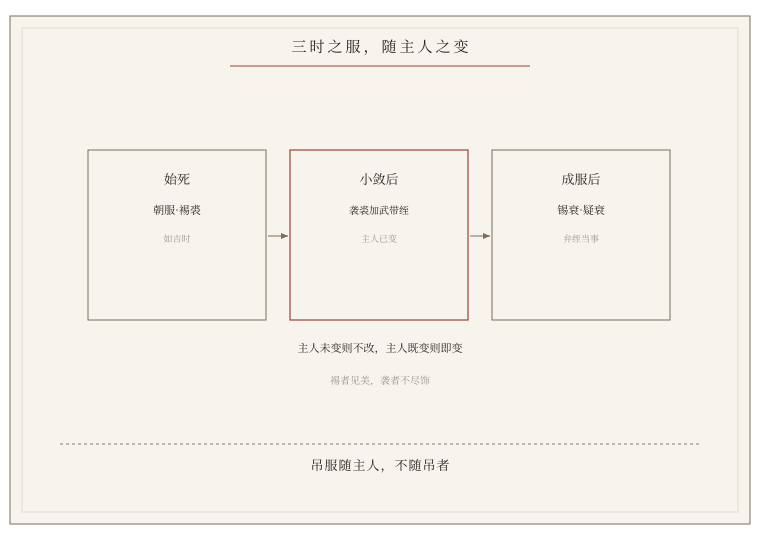

檀弓上 · 三·五十七 · 第 260 课
曾子襲裘而吊，子游裼裘而吊。曾子指子游而示人曰：「夫夫也，為習於禮者，如之何其裼裘而吊也？」主人既小斂，袒、括髮，子游趨而出，襲裘帶絰而入。曾子曰：「我過矣，我過矣，夫夫是也。」
说什么事：吊丧的衣裳要跟着主人变。曾子见子游此际还露着裼衣，就当着人指他。等到主人小敛一变，子游才转身出去、袭裘带绖而入——原来他早备下了，等的就是这一变。
落在哪一层：礼，兼及礼数与礼意。论「服随主人之变」。
为何编在此位：上节曾子为护人而造说、闻子游一言而服；此节曾子以「习礼」之目责子游、又自认「我过矣」。两节相次，同一对，一进一退，都是曾子学。
【经】曾子襲裘而吊，子游裼裘而吊。曾子指子游而示人曰：「夫夫也，為習於禮者，如之何其裼裘而吊也？」主人既小斂，袒、括髮，子游趨而出，襲裘帶絰而入。曾子曰：「我過矣，我過矣，夫夫是也。」
【注】曾子盖知临丧无饰。夫夫，犹言此丈夫也；子游于时名为习礼。于主人变乃变也，所吊者朋友。服是善子游。
【疏】此一节论吊礼得失之事。凡吊丧之礼，主人未变之前，吊者吉服而吊——吉服谓羔裘、玄冠、缁衣、素裳，又袒去上服以露裼衣，则此「裼裘而吊」是也。主人既变之后，虽著朝服而加武以绖，又掩其上服，若是朋友又加带，则此「袭裘带绖而入」是也。案《丧大记》云「吊者袭裘，加武，带绖」，注云：「始死，吊者朝服裼裘，如吉时也；小敛则改袭裘而加武与带绖矣。武，吉冠之卷也；加武者，明不改冠，但加绖于武。」《丧大记》所云亦据朋友，故云「带绖」；带既在腰，郑注「加武与带绖」，似带亦加武者，其实加武唯绖，连言带耳。主人成服之后，吊者大夫则锡衰、士则疑衰，当事皆首服弁绖。此子游之吊，未知主人小敛以否，何因出则有带绖服之而入？但子游既及吊丧，豫备其事，故将带绖行也。
袭裘 掩其上服，裘不外露。袭，重衣。
裼裘 袒去上服，露出裼衣。裼，露。
夫夫 注「犹言此丈夫也」。上一「夫」音扶，下如字；一读并如字。
袒、括髮 袒露左臂、束发。主人小敛后之变。
絰 首绖与腰带。疏「加武唯绖，连言带耳」。
武 吉冠之卷（冠圈）。加武，明不改冠。
趨而出 快步出户，去改服。
我过矣 我错了。两呼，重其自认。
曾子掩着裘去吊丧，子游露着裼衣去吊丧。曾子指子游给人看，说：「这个人，号称熟习礼的，怎么吊丧还裼裘？」主人小敛之后，袒臂束发，子游快步出去，掩上裘、系上绖带再进来。
曾子说：「我错了，我错了。这个人是对的。」
吊服有三时：始死，朝服裼裘，如吉时；小敛后，袭裘加武与带绖；成服后，大夫锡衰、士疑衰，首服弁绖。三时之服，皆是跟着主人走的：主人未变，吊者不改；主人一变，吊者即变。
曾子以子游「名为习礼」而断其非，是以名断人。子游带绖先在身上，等人一变即入，是以事验名。名可以误人，事不会。
「我过矣」两呼，与上节「多矣乎」同一调。《檀弓》记曾子，不隐其短：一为护人而造说，一为责人而失言，两次都被子游照出，两次都当众认。
第一层 三时之服 始死、小敛、成服，三个时点，三套衣裳。这套安排的要害不在衣裳，在「时」：服不是吊者的常态，是主人状态的镜子。主人还在惊痛中，吊者不可先自降服，那是替人加哀；主人已经变服，吊者不可仍如平时，那是视人之丧如无。
第二层 裼与袭 裼是见美，袭是不尽饰。《玉藻》「裘之裼也，见美也；吊则袭，不尽饰也」。平时见客要裼，见丧则袭——丧中不以饰加于人。但始死之际，主人未变，吊者仍吉服裼裘：此时所行者是「吊」之常礼，尚未入「变」。故裼袭之节，全系于主人变未变。
第三层 名与实 子游「名为习礼」，曾子即以名为断。而子游所行，是「豫备其事」：带绖早在身上，只待其变。故知「习礼」不在知几条，在事先备好下一步。名不足以断人，事乃足以验名；反过来，人亦不可以名自恃。
第四层 两次自认 上一节曾子「多矣乎，予出祖者」，此节「我过矣，我过矣」。一个是护人失，一个是责人误，两次都落在一个「服」字。学问之实，不在不犯错，在错即认；且认在当下、当众，不待明日。
与今日何干 评判一个人懂不懂行，常看他此刻的动作合不合规矩，而不看他是否为下一刻备好了东西。子游随身带着带绖，不是临时想起，是早知道有这一变。真正的熟，是备好了下一步；真正的礼，是跟着对方的状态走，而不是跟着自己的判断走。
| 左 | 右 |
|---|---|
| 始死：朝服裼裘 | 如吉时 |
| 小敛后：袭裘加武带绖 | 随主人变 |
| 成服后：锡衰、疑衰 | 弁绖当事 |
| 裼 | 见美 |
| 袭 | 不尽饰 |
| 曾子责以名 | 名为习礼 |
| 子游验以事 | 豫备带绖 |
| 我过矣 | 认在当下 |
画一处丧家堂下的门内外，视点平。门外立着两位吊客：左者（曾子，年长、深衣、手指右方、口微张）正指右边那位（子游，中年、衣冠整齐、腰间已有绖带、袖手侧立）。门内堂上，主人伏地、袒左臂、发散才束，旁边一人执麻。门下有一道门槛，门槛上落着一小截麻绳。不写文字、不画人面细节。赭色只用在子游腰间那道绖带与门槛上的麻绳。
